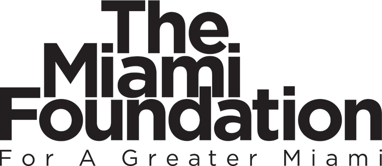

About the Fund
The Legal Clinic Fund is a collaborative fund to support the growth and sustainability of legal clinics across the United States that seek to advance and defend first amendment rights, media freedom, and transparency in their communities and nationally.
The Fund will provide grants to support the clinics’ growth, collaboration, capacity building, and experimentation. This Fund will be a catalyst for the growth and sustainability of existing clinics and centers and will provide newsrooms and journalists with increased legal resources and representation for those who are least likely to receive it from traditional sources. Ultimately, the Fund seeks to ensure that any newsroom or journalists who needs legal support can access it.
The Fund is supported by Democracy Fund, Heising-Simons Foundation, and The Klarman Family Foundation. The Miami Foundation serves as fiscal sponsor for the Fund.
Grant Size + Duration
Grant amounts will vary, depending on proposed activities and the organization’s capacity. Grant awards for small organizations will likely range from $50,000 - $150,000 annually. Grant awards for large organizations will likely range from $75,000 - $200,000 annually. Grant awards in the collaboration and resource sharing category will not exceed $15,000 as they are focused on helping provide small funding to support collaborations.
Grant durations will also vary but we expect many grants will support multi-year projects. As part of the application process applicants will be able to express interest in being considered for multi-year funding.
Please note there is a 10% limit on university overhead that may be charged to grant awards.
Timeline
- RFP released: Tuesday, May 7, 2019
- Proposals due: Friday, June 7, 2019 at 12:00 pm EST
- Site Visits: July 1, 2019 - July 19, 2019
- Estimated notification of grant awards: Late July 2019
- Estimated grant period: August 1, 2019 – July 31, 2020
Eligibility
Legal clinics affiliated with accredited law schools are eligible to apply. The fund will not provide seed funding for new clinics or grants to unfunded proposed clinics. The fund will consider proposals from clinics already planning to launch in the 2019 academic year with other funding. Preference will be given to clinics able to demonstrate a commitment to service of, or partnership with, newsrooms and journalists.
Clinics that submit joint proposals are still eligible to submit separate proposals in other focus areas.
Focus Areas
The Fund will provide financial support to First Amendment and media serving legal clinics affiliated with accredited law schools. The Fund will administer grants in three broad areas: capacity building and infrastructure, collaboration, and experimentation.
Capacity building and infrastructure
The Fund seeks to invest in capacity building efforts including, but not limited to, the funding of fellows, litigation costs, administrative support, programmatic support and/or expansion, etc. that will enable legal clinics to serve more journalists and expand their impact.
Collaboration and resource sharing
The Fund seeks to support partnerships between two or more clinics tackling joint projects, cases, or tasks that leverage the diverse skills or scale of the network as well as projects that create shared resources that make clinics more efficient or impactful.
Experimentation
The fund wants to support forward looking, exploratory and experimental projects that could have profound impact on the field, or establish important new ideas.
Values
Independence
It is of paramount importance that any legal clinic receiving funding from the fund remain independent. As such, the fund will not seek to influence decisions regarding the cases these clinics take on.
Community
The fund will prioritize organizations that are working in service of local communities and publishers, and helping address local, regional and state issues. We expect that many clinics will also work on national level cases, but want to encourage accessibility to the issues local journalists encounter. We also recognize that local cases can set important precedents that are critical to national debates later.
Diversity, Equity, and Inclusion
The fund will give special consideration to how legal clinics can help support a new generation of diverse First Amendment scholars and practitioners. If we are to defend the First Amendment as a right embraced by all, we must work to ensure the field of First Amendment lawyers is inclusive as well.
Collaboration
Throughout history, advances in First Amendment law have often come through solidarity across publishers. The need for partnership is even greater now, and as such the fund is biased towards collaboration. We believe that these legal clinics will be stronger and more successful if they can develop strong relationships rooted in collaboration and partnership.
Sustainability
The Fund values clinics seeking to build a long-term resource, not a short term infusion of capital for a temporary spike in activity.
Application Process
Eligible applicants must submit a proposal online via Submittable – https://themiamifoundation.submittable.com. Each organization may submit one proposal, with the exception of those also submitting a joint collaborative proposal. You can download the full guidelines application here. A representative from the fund will reach out to finalists to organize a site visit, or video call, with clinic leadership and a law school administrator.
How Decisions Get Made
An advisory committee (to be announced) with knowledge of the landscape of clinics focused a press freedom issues, legal challenges newsrooms and independent journalists face, and grant making best practice, will complete a blind review of grant applications and make recommendations for funding using the stated guidelines and values above.
Information Session + Office Hours
Interested applicants are invited to attend an Information Session to learn more about the Legal Clinic Fund. If an applicant has specific questions related to their application or eligibility please register for Office Hours:
- Information Session (Webinar): Wednesday, May 15, 2019 1:00 – 2:00 pm EST.
- Office Hours (Phone): Monday, May 20, 2019 2:30 – 3:30 pm EST
- Office Hours (Phone): Tuesday, May 21, 2019 12:30 – 1:30 pm EST
Questions
Please contact Lindsey Linzer, Senior Director of Programs and Grants Administration, The Miami Foundation at LLinzer@miamifoundation.org.

- 